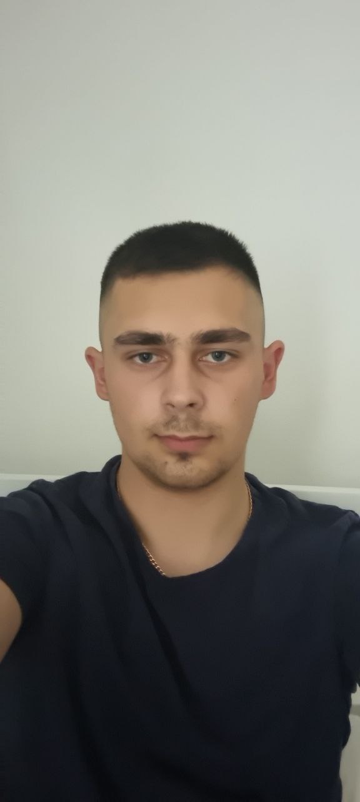

Біографія

Народився 28 березня 2002 року в селі Росохач що на Тернопільщині. У 2008 вступив до Росохацької ЗОШ I-III ступенів. Після закінчення школи успішно здав ЗНО та потсупив в університет. Спочатку планував навчатися у Львівській політехніці на спеціальності "Інженерія програмного забезпечення", але в останій тиждень передумав і пішов вчитися в ТНТУ на інженерії програмного забепечення. Зараз мені 19 і я третьокурсник.